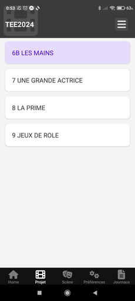
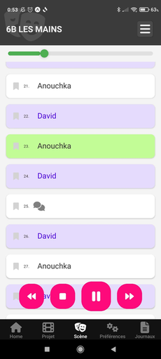
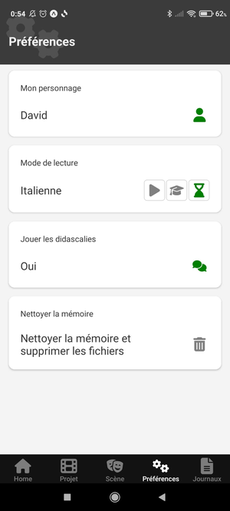

Homelet est une application mobile innovante conçue pour aider les acteurs à apprendre leurs textes de manière simple, efficace et collaborative.
Pourquoi Homelet ?
En tant qu'acteur amateur débutant dans un (fabuleux) atelier de théâtre, j’ai été confronté à un défi auquel je n’étais pas habitué : apprendre mon texte !
J’ai adopté une méthode qui me convenait :
- J’enregistrais les répliques des autres personnages avec l’application "Magnétophone" de mon smartphone.
- Je laissais des silences là où mon propre personnage devait parler.
- Je me rejouais ces enregistrements pour répéter mes répliques, que ce soit dans le métro, en marchant, en faisant le ménage, ou en repassant mon linge.
Cette technique, bien que pratique, montrait vite ses limites. C’est ainsi qu’est née l’idée de Homelet : un magnétophone amélioré, pensé pour les acteurs.
Les fonctionnalités principales de Homelet
Un outil structuré pour vos répétitions
- Organisation en "projets" : chaque pièce, film ou œuvre est un projet.
- Un projet est composé de plusieurs scènes.
- Une scène se décompose en plusieurs répliques.
- Chaque réplique est associée à un personnage.
Pas de saisie fastidieuse, juste un enregistrement !
- Aucune saisie de texte laborieuse : inutile de retranscrire vos textes dans l’application.
- Pas de synthèse vocale : les voix sont naturelles, les vôtres et celles de vos "collègues".
- Un enregistrement simple et unique : il suffit de lire vos répliques une fois lors d’une lecture, et elles sont prêtes à être utilisées et partagées.
Enregistrement audio intuitif
- Enregistrez les répliques de chaque scène en les associant aux personnages.
- Lors de la lecture d’une scène, les répliques de votre personnage peuvent être mutées, laissant un silence pour vos répétitions.
- Lecture flexible : commencez à n’importe quelle réplique, ajustez les paramètres de lecture à vos besoins.
Un aspect collaboratif puissant
Petit à petit, une bibliothèque complète des répliques, enregistrées par différents acteurs, se construit pour faciliter les répétitions de toute la troupe.
A quoi ressemble Homelet ?
- Page Projet : naviguez entre les différentes scènes de votre projet.
- Page Scène : visualisez toutes les répliques d'une scène et lancez la lecture.
- Page Préférences : ajustez les réglages pour personnaliser votre expérience.
  
Où en est le projet ?
Une première version bêta fonctionnelle est prête, mais elle n’est pas encore disponible sur les plateformes (le processus de publication est en cours). On peut l'installer à la demande (me contacter).
Voici un lien vers l'aide en ligne ainsi que vers la politique de confidentialité.
Compatibilité
L’application est développée pour être compatible avec Android et iOS.
Appel à testeurs
Je recherche des volontaires pour tester cette version bêta et m’aider à améliorer l’application. Si vous êtes intéressé, n’hésitez pas à me contacter sur homelet.app@gmail.com !